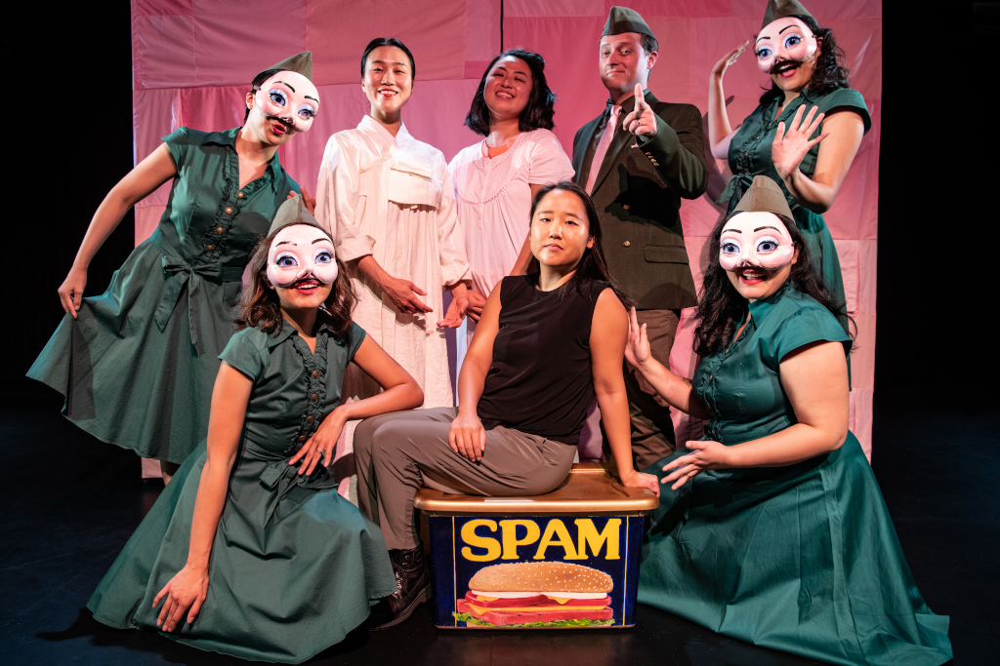

Handwritten
An animated short documentary on the significance of handwriting in Jaime Sunwoo's personal life and throughout history, sparked by the fact that she has never had a consistent handwriting style.

Equality Tea
An animated short documentary that makes parallels between the fraught histories of the tea trade and the suffrage movement.

Color Theory
A hybrid documentary short scripted with found text examining the perception of color throughout history of Western art and culture as a subtext for how we perceive race.
Specially Processed American Me
A filmed theatrical production of a surreal autobiographical performance using SPAM, the canned meat, as a portal into Jaime Sunwoo's Asian American upbringing and her family's experiences of the Korean War.